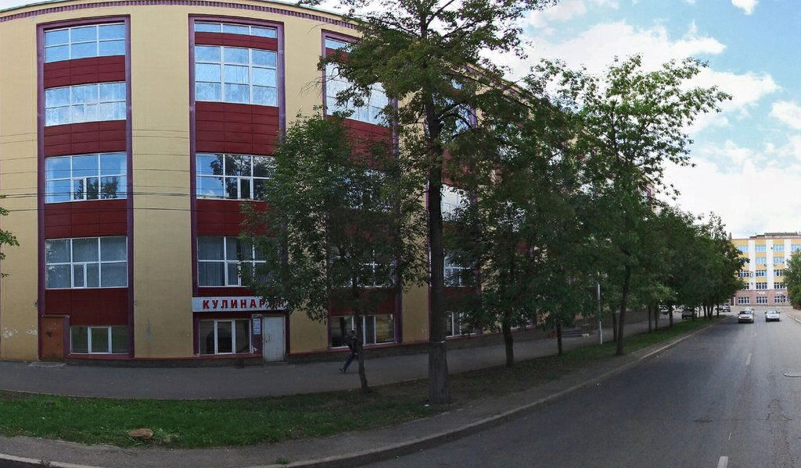

Организация распорядка дня на военной кафедре
8:15 - 8:25 утренний осмотр и развод на занятия
8:30 - 9:15 - 1 час занятий
9:20 - 10:05 - 2 час занятий
10:15 - 11:00 - 3 час занятий
11:05 - 11:50 - 4 час занятий
11:50 - 12:30 - Перерыв на обед
12:30 - 13:15 - 5 час занятий
13:20 - 14:05 - 6 час занятий
Самостоятельная работа студентов (СРС)
14:15 - 15:00 - 7 час занятий
15:05 - 15:50 - 8 час занятий
Организационная и воспитательная работа
16:00 - 16:45 - согласно графику
16:45 - 16:50 - Построение.
Подведение итогов дня